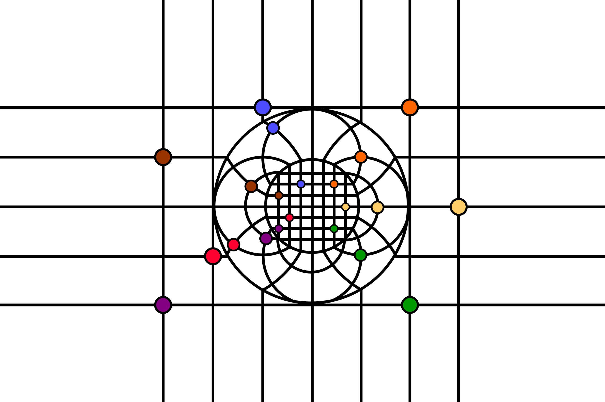
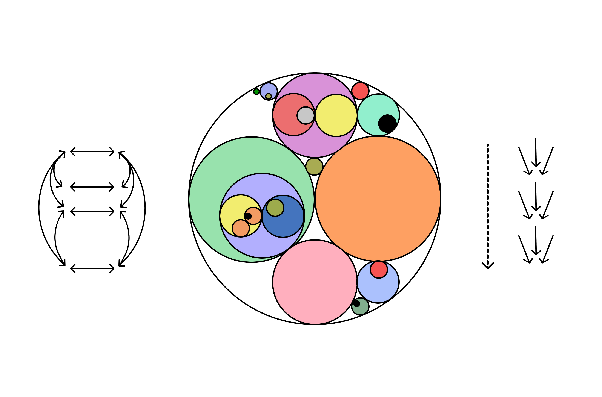
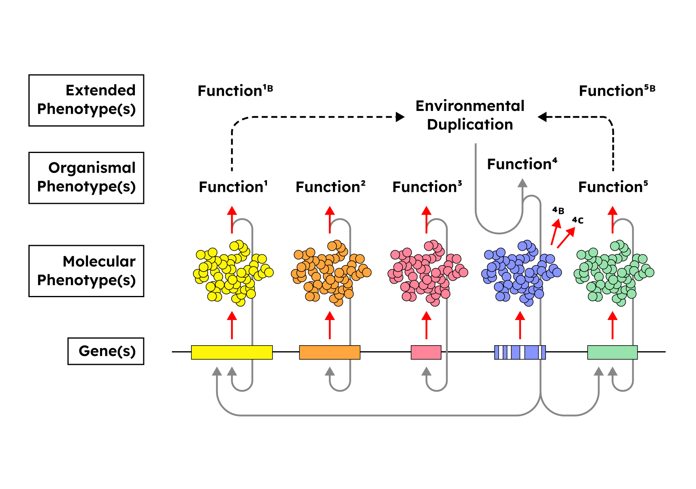

Sections
⧆ Introducing the Technosphere
⧆ Hierarchical Transitions
⧆ Intrinsic Duplication + Ancestral Haemoglobin
⧆ Extrinsic Duplication + Hierarchic Biological Complexity
⧆ Endosymbiosis, Multicellularity, Complexity Drain
⧆ Concluding Thoughts
Some time ago I had the opportunity to attend an Environmental Humanities graduate seminar at the University of British Columbia with
Derek Woods. While I did not register for the whole course,
I dropped in on a single session where the topic of discussion was “Planetary Technics.” During the seminar I began contemplating
hazy connections between an assigned reading on the topic of large-scale technological systems (which I’ll introduce in the
following section) and some ideas in theoretical biology that I'd recently encountered about the collective dynamics of major hierarchic
transitions. The following text attempts to flesh out these conceptual relationships in more detail.
This piece is a work in progress. Initially, I intended to work with just two resources, one text and one lecture, putting them in dialogue with one another to tease out their similarities and chart future research directions. As I was writing I encountered new references that complemented this project and new texts, ideas, and thinkers began to orbit around my efforts. While far from complete, I’ve done my best to integrate some of these new resources into the following piece. Unlike a polished text with a focused narrative, my writing here is an attempt to feel my way through a set of ideas, documenting my thoughts as I piece them together. My hope is that I’ll continue to develop and refine this line of thinking long after this piece has been shared here, especially as it has become increasingly apparent that this topic is much richer than I’d first imagined.
Introducing the Technosphere
The seminar readings that week touched on a range of topics relating to technology, media, geology, ecology, and the noosphere. Among them was Humans and Technology in the Anthropocene: Six Rules, a fascinating paper on planetary-scale technological systems, authored by Emeritus Professor of Geology and Civil and Environmental Engineering, Peter Haff. In the text, Haff proposes six rules to summarize the quasi-autonomous operation of planetary-scale technology:
① The rule of inaccessibility
② The rule of impotence
③ The rule of control
④ The rule of reciprocity
⑤ The rule of performance
⑥ The rule of provision
Each rule is meant to reflect a key feature of how large-scale, stratified technological systems shape the scope of interactions available to the individuals and/or objects that inhabit such systems or participate in their functioning. Those looking for a more comprehensive account of these rules are encouraged to consult the paper directly (linked above) as this piece will not discuss them in great detail. In a nutshell, they can be condensed as such:
① Inaccessibility: Differences in size or scale of two or more systems strongly limits precise interactions between their local variables.
② Impotence: Larger scale systems constrain lower-tier components and are therefore generally unresponsive to most behavior of these nested
subsystems.
③ Control: No individual part may directly control or cause a system's behaviour but can act in such a way to more effectively enable the
system's viability.
④ Reciprocity: Symmetrical interactions between two or more systems are limited to those sharing the same stratum or scale.
⑤ Performance: Some of the actions undertaken by most of a system's parts are directed solely to supporting the function of the system to which they belong.
⑥ Provision: Higher-stratum systems contribute to the maintenance of a suitable environment for their components so as to enable their support-function
behaviour.
There are evidently many ways of interpreting an idea as broad as a "planetary-scale technology" or "large-scale technological system." Similar expressions of such a notion—i.e., a global sphere driven by, and consisting of, human rationality, scientific knowledge, technological development and its resulting artifacts—include the Anthroposphere, Conscious-Technology, The Global Brain, and the Noosphere. Haff’s specific formulation is what he calls the technosphere. It's instructive to begin with some definitions of this term, to set the stage for the connections I’m interested in exploring between Haff's work and the idea of hierarchic transitions in biology.
In an academic context, the word “technosphere” can be traced back to a 1968 text by biomedical engineer and biological control-theory researcher J. H. Milsum, although Haff has made the term his own through a number of publications in the last decade or so (e.g. see 1 and 2), many of which were thematically tied to a growing literature on the Anthropocene. For Haff, the technosphere is the technological analogue to the various natural geological paradigms or planetary spheres that constitute and sustain the Earth system, such as the geosphere, the hydrosphere, the atmosphere, or the biosphere. Haff notes, for instance, that all of the aforementioned systems are global in their extent, autonomous to some degree, and involve widespread appropriation of resources. More specifically, Haff characterizes the technosphere as:
A global interconnected system of
◾ Technical artifacts
◾ Social structures
◾ Physical infrastructure
which constitute
◾ The totality of the built human environment
◾ The particular energy and resource transformations underpinning the system’s “metabolic” profile
◾ The emergent principles that govern our relationship with it.
Per this definition, the technosphere is not simply the aggregate of all technological objects—much like the biosphere is not merely the sum of all planetary biomass—but rather has dynamic emergent properties that result from the organization of its various components and the associations between them, including constraints, incentives, deterrents, and other relational processes associated with the system’s functioning. This central characterization of a complex system such as the technosphere or the biosphere is to be clearly understood and we’ll return to this point in a moment.
We can get a richer, more extensive view of what is meant by the technosphere by turning to the following passage taken from Haff's 2014 text titled Technology as a Geological Phenomenon: Implications for Human Well-Being:
“[The technosphere is]…the set of large-scale networked technologies that underlie and make possible rapid extraction from the Earth of large quantities of free energy and subsequent power generation, long distance, nearly instantaneous communication, rapid long-distance energy and mass transport, the existence and operation of modern governmental and other bureaucracies, high-intensity industrial and manufacturing operations including regional, continental and global distribution of food and other goods, and a myriad additional ‘artificial’ or ‘non-natural’ processes without which modern civilization and its present 7 × 109 human constituents could not exist. If the term ‘anthroposphere’ is meant to emphasize the role of human beings as causative agents responsible for Earth transformations that define the Anthropocene, the use of ‘technosphere’ suggests a more detached view of an emerging geological process that has entrained humans as essential components that support its dynamics.”
Haff again, from the more recent article which we read in the seminar:
“The technosphere includes the world’s large-scale energy and resource extraction systems, power generation and transmission systems, communication, transportation, financial and other networks, governments and bureaucracies, cities, factories, farms and myriad other ‘built’ systems, as well as all the parts of these systems, including computers, windows, tractors, office memos and humans. It also includes systems which traditionally we think of as social or human-dominated, such as religious institutions or NGOs. The Haber-Bosch process and associated technologies, responsible through synthetic fixation of nitrogen and distribution of resulting fertilizers for providing about 40% of the world’s dietary protein (Smil, 2002), is a specific example of a globally distributed component of the technosphere.”
These excerpts highlight the many energetic, informational, logistical, and productive processes enabled by our planetary technological system as well as some concrete examples of the interrelated artifactual subsystems which the technosphere comprises—i.e., the various contemporary networked technologies nested within the global system. Both these aspects (built artifactual systems and the dynamic processes they facilitate) are part and parcel of the descriptions above and draw our attention to the sheer scale and scope of the technosphere, its constituent processes, and component subsystems. From relatively simple products like office memos and fertilizer, to complex intergenerational socio-cultural forms like religious institutions, cities, and governments, the magnitude of Haff's technosphere is vast and totalizing, assimilating nearly all phenomena connected to the workings of contemporary human civilization, including the behaviour of human subjects themselves.
This leads us directly to one of the central aspects of Haff’s theory of large-scale technological networks: his insistence on a shift in our thinking away from the “natural assumption that the technosphere is primarily a human-created and controlled system”, toward “the idea that the workings of modern humanity are a product of a system that operates beyond our control and that imposes its own requirements on human behaviour.” Put plainly: "humans are components of a larger sphere they did not design, do not understand, do not control and from which they cannot escape." Haff notes that similar positions have been articulated in other scholarly contexts, particularly by political and social theorists such as Langdon Winner and Jacques Ellul, who have written about the emergence of modern autonomous technological systems and "whose works go a long way toward disabusing the notion that humans operate as independent agents in the modern technological world."
One way of thinking about the interrelatedness of human agents and the technosphere that Haff keenly highlights is to frame this dynamic in terms of organization and constraint in complex systems. Haff devotes a section to these ideas, which I will expand on in more detail once we get into the biology of hierarchic transitions. For now it will suffice to say that the general idea is that for a complex dynamic system to endure through time and space—i.e., to maintain some coherent systemic unity at some relevant temporal and spatial scales—the component parts and local processes must be organized in relation to one another in a manner that is consistent with the system’s ability to reproduce itself as a unified global whole. In other words, systemic consistency and robustness requires functional organization, implying constraints on the degrees of freedom accessible to constituent components.
Once we're committed to conceiving of the technosphere as a higher-level unity defined by organizational relations between coupled subsystems, we can begin to concieve of human agents as subordinate elements whose interactions must be constrained to some extent so as to align with the emergent properties and principles of the global system within which they are embedded, and contribute to its maintenance and continuity. Haff's 2014 text offers some examples of just what such constraints are, ranging from "hard" and tangible elements like architectural and infrastructural barriers, to "soft" and more normative or abstract directives, such as instituional statutes, and incentives or deterrents for behaviour that either supports or interferes with the functioning of a given host system. Taken together, we can interpret these organizational features of the technosphere in terms of the first 4 rules: i.e., planetary scale, distributed, systemic functionality (③ control) and attendant organizational constraints (② impotence) inhibit direct causal interactions between the different strata (① inaccessibility) of a large-scale, complex technological system, and the activities of such a system may only be directly affected by other systems which operate at comparable scales and are therefore capable of mutual interaction (④ reciprocity).
Importantly, the intertwining of human societies and planetary-scale technology also implies our increasing reliance on the technosphere's functioning to support our livelihood and continued existence. For instance, Haff puts forth the following estimation to really drive home the extent to which contemporary human populations are beholden to the organizational constraints, and affordances, of large-scale technological systems: "the pre-Anthropocene, pre-technological … human population was perhaps 10 million" and "the ramp-up of technology from pre-history through, e.g., dynastic China, Rome and medieval Europe to today’s global technology has led to the expansion of this population to a level approaching 10 billion today … suggesting that on the order of 999 out of every 1000 humans owe their existence and their wellbeing to technological systems."
Moreover, by treating the technosphere like an emerging geological process, Haff's emphasis on its quasi-autonomous properties frames the relationship between planetary technology and other Anthropocene-related phenomena in a manner which strongly understates human autonomy over the production and transformation of the built environment. In much of the literature, the Anthropocene is commonly characterized by aggregate human-driven impacts on various natural planetary systems. It's right there in the title, whose literal translation is "recent age of man." Thus, Haff’s contribution to such discourse works to unsettle our assumptions about the causal direction of this relationship between humans, technology, and the Earth. As Haff writes: "The technosphere is a system for which humans are essential but, nonetheless, subordinate parts … This does not mean that humans cannot influence its behavior, but that the technosphere will tend to resist attempts to compromise its function." Haff again: "humans have become entrained within the matrix of technology and are now borne along by a supervening dynamics from which they cannot simultaneously escape and survive."
It is my view that in addition to Haff's novel contributions to a discursive body of work related specifically to technology and the Anthropocene, the general framework for which he advocates—that the emergent dynamics of the technosphere restrict and recruit human action to mutually support continued functioning of component parts and a resultant macrosystem—also resonates with an area of focus in theoretical biology that deals with evolutionary principles of hierarchic constraint and the formation of new levels of units of selection. Elaborating on this similarity may offer some insights into the principles of both biological complexity and our novel planetary-scale paradigm.
To recap: According to Haff, the technosphere is a composite system and planetary paradigm comparable to other geological phenomena. Its components include everything from human organisms to technological artifacts, social institutions, and emergent relational processes which both enable and are enabled by the global system. These organizational constraints play a significant role in ensuring the reciprocal survival and functioning of both the whole system and its natural and artificial components. Conceptualizing the nature of large-scale technological systems in the aforementioned manner may illuminate equivalences between the dynamics of an emerging technosphere and the evolution of hierarchically-nested biological systems.
The remainder of this text will focus on drawing comparisons between the rules of the technosphere and the ideas of Terrence Deacon, and Daniel McShea, regarding hierarchic transitions in coupled biological systems, and the transformations in complexity and autonomy that accompany such processes. In order to make these connections, and clarify some of the terms I’ve just introduced, I now turn to some key points from a talk that Deacon gave in 2017, as well as a paper published in 2022, each pertaining to the subject of hierarchic transitions in biological evolution.
Hierarchic Transitions
A couple of years ago I came across a presentation on YouTube titled "Hierarchic Transitions in Evolution", delivered by neuroanthropoligist Terrence Deacon for a virtual seminar series associated with Binghampton University’s Evolutionary Studies Program. I've also discovered more recently that the ideas Deacon presents in this talk have also been documented in a 2022 article in the journal Biosystems titled A Degenerative Process Underlying Hierarchic Transitions in Evolution. In both these resources, Deacon speculates on how the hierarchic complexity of organismal structure, form, and function are generated through evolutionary processes. Generally speaking, transitions in hierarchic complexity refers to a biological phenomenon whereby two or more autonomous organic entities develop co-dependent or synergistic behaviours with the emergent collective relations of a resultant global system, often leading to the stabilization of new macro-scale biological units (such as pluricellular or multicellular organisms). Hierarchic complexity also denotes what some believe to be a resultant decrease in the functional autonomy of the novel system's constituent entities that come to occupy lower-tier strata relative to the emergent whole. Owing in part to the lack of any widely accepted theory of how such transformations in hierarchic complexity occur, Deacon has developed his own framework for thinking about how these organizational features of living systems emerge at various scales, and how this process might be implicated in evolutionary developments, such as the formation of new levels of selection, or transitions in individuality. Much like Haff's work on the technosphere, Deacon's theory of hierarchic complexity reflects a similar concern for principles of organization and constraint, distributed functionality, and gradations of autonomy across multiple scales of hierarchically-nested systems.
Deacon's thoughts on this topic can be situated within an existing body of modern literature on the phenomenon of hierarchic transitions, or evolutionary transitions in individuality, that is nearly a century and a half old. As mentioned above, this process is thought to involve groups of discrete organisms that collectively form higher-level aggregate entities or novel concrete biological individuals over evolutionary timescales. In this context, a biological entity or individual refers to: a temporally-enduring spatially-individuated being with properties or functions, such as feeding, reproduction, and self-preservation, which belong to the system at the highest-level. A broad range of examples illustrate this idea, including the origin of eukaryotic cells via prokaryotic symbiosis, multicellular entities arising from unicellular organisms, and colonies formed from pluricellular individuals. An early treatment of this topic in the modern history of biology can be found in Herbert Spencer's 19th c. works Principles of Biology and First Principles, which theorized, in the parlance of their time, about the nature of hierarchically-nested scales of biological organization. In 1942, a series of papers published together under the title Biological Symposia, Vol VIII. Levels of Integration in Biological and Social Systems sought to discuss the relationship between such varied subjects as colonial Protozoa, the origins of multicellularity, and comparisons of human and insect societies. Throughout the latter half of the 20th c., major contributions to the literature included texts and publications such as H. H. Pattee’s The Problem of Biological Hierarchy (1970) and The Nature of Hierarchical Controls in Living Matter (1972), Stanley N. Salthe’s Evolving Hierarchical Systems (1985), Leo Buss’ The Evolution of Individuality (1987), and John Maynard Smith and Eörs Szathmáry’s The Major Transitions in Evolution (1995), as well as concepts like Valentin Turchin’s ‘Metasystem Transitions’ (1970), and the notions of ‘Dual Control’ and ‘Hierarchical Boundary Conditions’ (1968) in the work of Michael Polanyi. It should be noted that this text only engages with a very small sample of available resources on this topic.
In his lecture, Deacon first sets out to address what he sees as a contradiction in “replicator-selection stories” of evolution, i.e., explanations of evolutionary phenomena most commonly associated with selfish gene theory. Deacon posits that replicator-selection theories mistakenly overemphasize absolute autonomy and controlled replication as the primary, conserved features underpinning evolving biological systems, instantiated in what is thought to be the most fundamental causal unit of the organism: the gene. Deacon reasons, however, that the existence of evolving hierarchically-complex living systems implies coordination and regulation across a multitude of intraorganismal and extra-genetic scales, and that the autonomy of the constituents of such systems, and the degree of control they can exercise, must therefore be relinquished to some degree if synergies between these various interdependent levels are to develop at all. In his most recent paper, Deacon substantiates this point by drawing from a 2017 article titled On the Developmental Self-Regulatory Dynamics and Evolution of Individuated Multicellular Organisms, written by theoretical biologist Felipe Veloso, who Deacon believes “unambiguously demonstrates that the development of multicellular animals depends on a shift of control from intracellular genetic constraints to extra-cellular relational constraints that emerge at the organism level.”
To further develop this perspective, Deacon turns to the work of evolutionary biologist Leo Buss, and the phenomena of multicellular individuality in plants, animals, and fungi, to provide examples of a class of systems which favour sophisticated cooperation and exhibit autonomy-limiting properties at various scales of their organization. For example, Deacon describes how fungi enable cellular cooperation via cell membranes which are porous enough to favor widespread homogeneity in cell-type and tissues. The logic here is that having cell membranes with greater permeability makes it difficult to correlate the influence of a set of genes, or a genome, on the internal milieu of a local cell, rather than those of neighbouring cells. In other words, if the membrane cannot reliably regulate what enters and leaves the cell, gene products can have effects both inside and outside the cell in an untargeted manner, nullifying any strong demarcation between the autonomy or identity of an individual cell, and its controlled effects, and that of any other cell in the system. As a result, from any individual cell's point of view, it is impossible to guarantee whether their genes will be the ones reproduced in the fruiting body. Cooperative reproductive behaviour among these cells may then emerge as a compensatory mechanism for constraints on the absolute reproductive autonomy of any given cell in the collective. In the case of plants, Deacon points to the structural limitations of rigid cell walls and their role in restricting movement and fostering highly deterministic cell fates. This is a more coercive evolutionary strategy than that of fungal organisms, but nonetheless facilitates systemic cohesion while dampening cellular autonomy. Briefly put: multicellular synergistic cooperation among cellular components “is accomplished in fungi by preventing genetic determination of distinct tissue types, in plants by eliminating mobility of cells, and in animals by determination of cell lineage fates by maternal factors prior to cell-specific gene expression.” In all cases, the idea is that multicellular eukaryotic systems acheive stable, aggregate individuation in part by preventing any given cell from fully and independently determining whether it can replicate or persist independently. Without this constraint, the integrity of the global system is likely to be compromised by selfish unfettered replication, such as that which occurs during cancerous cell growth.
Here we return to the account I began to sketch in the previous section about organization and constraint in dynamic systems. Both Haff and
Deacon—as well as many of those working on the question of hierarchic transitions more generally—offer similar frameworks
for thinking about seemingly disparate yet potentially analogous phenomena in both biological and social reality. Much like the dynamics of multicellularity, the dynamics of the technosphere
might also be viewed as that of a hierarchical system exploiting similar organizational principles to ensure
the reciprocal and synergistic functioning of an emergent global whole relative to its parts, irrespective of the material basis of the
components. Aside from the domain of application, another key difference between Haff and Deacon is that the former focuses mostly on an analysis of how a hybrid
techno-bio-social system such as this might work, while the latter is providing a theory for how similarly structured biological
systems got to be this way.

Deacon's question is ultimately an evolutionary, or perhaps historical, one: i.e., how might any form of synergistic cooperation underpinning hierarchically-organized biological systems, and the implicit constraints on autonomy that result from such organization, occur in the first place? Deacon attempts to address this with the following proposal:
◾ In biology, environmental changes, as well as certain intra-organismal dynamics, can alter the focus and character of the selective pressures maintaining a particular trait.
When there is a reduction in, or outright elimination of, traditional evolutionary pressure on a certain biological trait or function this is termed
"relaxed selection" and this weakening of selection may lead to the reduced prevalence, or complete loss, of the trait or function in question. In some cases, however, it can instigate biological novelty.
◾ Focusing on the latter of these two outcomes, Deacon speculates that if selection is relaxed on some functional trait of a system or
entity (let's say system or entity 'A'), this opens a space of possibility, outside the scope of selection pressures, where the random exploration
of unprecedented interactions between 'A' and another, often molecular, system or entity ('B'), may occur.
◾ Should advantageous, synergistic functionality emerge as a result of 'A' and 'B's novel interactions, selection pressure may shift to target the
composite system comprised of 'A', 'B', and their coupled relations, amplifying a mutual dependency.
◾ As this relationship of synergistic dependency develops, adaptively valuable functions once carried out independently by 'A' and/or 'B' may become increasingly distributed
across the interactions of the emergent coupled system, and progressively constituted by, and selected at, this higher level of organization.
◾ Furthermore, as this coupling is strengthened by selection over evolutionary time, 'A' and/or 'B' will progressively assume the functional
role of a component in the context of the larger novel macro-system which they mutually comprise.
To contrast with the slightly more abstract theorization in the previous paragraphs, the following sections turn to some specific examples of relaxed selection and hierarchic transitions which Deacon uses to clarify and support this theory.
Intrinsic Duplication + Ancestral Haemoglobin
To build his case, Deacon offers an explanation for the multiscale continuity of relaxed selection and hierarchic transitions that begins at the molecular, or intrinsic scale, and moves toward the extrinsic scale of intercellular and extra-organismal dynamics. A representative case at the molecular scale is gene duplication or polyploidy, wherein "genes or genomes replicate such that selection can act on one copy but is relaxed on the other." Gene duplication has been hypothesized to play a role in the evolution of biological novelty through the generation of redundant copies—where one copy continues to perform essential ancestral functions, while the other becomes free to explore non-deleterious transformations in its phenotypic structure or function. This "random walk" away from the original function or structure may thus potentially give rise to new traits. Deacon brings his own twist to this perspective in his 2022 Biosystems article:
"[non-deleterious point mutations in a gene duplicate] may result in a progressive loss of the specificity of protein function, with some functional associations being lost while other related interactions maintained. Whereas the initial evolution of protein function may involve structural compromises to accommodate its multiple associations to other molecules, multiple variant forms may provide a “have your cake and eat it too” option, with each variant form able to evolve greater specificity for one or another of these sub-functional capacities. In other words, the duplication, relaxation of selection, and random walk can provide a kind of exploration of the space of possible synergistic relationships that lie, in effect, in the “function space” just adjacent to an existing function. This is a recipe for increasing functional complexity."
In Deacon's view, the underlying principles shaping this process of duplication, relaxed selection, and random walk, and the exploration of possible synergistic relations in the novel "function space" that it engenders within a single cell, or individual organism, can also be generalized and expanded to encompass analogous processes occurring outside of, and between, such entities. That is to say, while intrinsic duplication operates at largely genetic, molecular, and regulatory levels, Deacon conjectures that extrinsic duplication can also occur at organismal and social scales. This will be key to understanding the links between Deacon's theoretical considerations and hierarchical constraint in planetary technological systems. In his lecture, Deacon provides numerous examples of intrinsic duplication involving synergies among haemoglobin variants, the acetylcholine receptors that compose an ion channel, and regulatory genes shaping body-plan segmentation, to name a few. In his more recent paper he focuses solely on a subset of these, one of which I'll summarize quickly before proceeding to describe extrinsic duplication.
In the case of the globin gene family, Deacon discusses how selection may have become relaxed for duplicate descendants of an ancestral haemoglobin gene, allowing mutations to accrue in less evolutionarily-conserved structural elements (as opposed to, say, genes associated with the shape of the oxygen-binding element). Over time, certain structural variations in ancestral haemoglobin populations supplied the possibility for a synergistic complementarity between variants to arise, such that two novel molecular structures (α and β haemoglobin) eventually found themselves capable of binding with one another, producing a tetramer capable of carrying not one but four iron atoms, enabling superior oxygen transportation throughout the vascular system.
In this prototypical example of a hierarchic transition via intrinsic duplication, "the alpha and beta hemoglobin duplicates each acquired independent changes in shape but minimal changes in oxygen binding capacity in their separate divergence from the original “ancestral” hemoglobin gene. Changes that increased the stability of tetrameric binding appear to have been favored by natural selection with respect to one another, probably because of the superior oxygen transport capacity of the tetrahedral form." In other words, as relaxed selection enabled a space of structural exploration wherein duplicate molecular units could 'discover' interactive structural coupling (binding of alpha and beta haemoglobin), this in turn offered selection the opportunity to target and stabilize a new synergistic, higher-level function (amplified oxygen transportation) that was distributed globally across a new aggregate system (the haemoglobin tetramer).
Extrinsic Duplication + Hierarchic Biological Complexity
Deacon’s notion of hierarchic complexity via extrinsic duplication brings us outside the intracellular realm of molecular variation and structural coupling into a domain of synergistic interactions between organisms and/or their environment, both of which remain continuous with his account of hierarchic evolutionary transitions. Deacon provides a number of examples to flesh out his notion of extrinsic duplication, including endosymbiosis, exogenous Vitamin C intake and a loss of function of the GULO gene, the emergence of eusocial collectives and the diminished autonomy of its members, and the development of language in humans and song structure in finches. Unlike intrinsic duplication, which often involves genetic, structural, or segmental duplications internal to a biological individual, many of these cases involve interactions between an organism and an externalized, duplicate source of an existing function intrinsic to the individual. Quoting Deacon at length in his discussion of the transition from the endogenous metabolic synthesis of ascorbic acid to exogenous dietary dependency in anthropoid primates:
"...reduced selection on the intrinsic function that is thereby provided with redundant support from outside will allow the intrinsic capacity to degrade..." and "...selection can be redistributed fractionally across highly diverse, and previously independent, genetic loci and epigenetic mechanisms...extrinsic ascorbic acid dependency provides us with an opportunity to look at some of the secondary consequences of this degradation. The reduction of purifying selection maintaining this enzyme in turn would have unmasked selection on a variety of other traits that help guarantee the availability of this now essential nutrient. Thus, the behavioral flexibility that initially allowed primates to regularly forage on fruit eventually “addicted” anthropoid primates to a dietary niche in which fruit acquisition and digestion were critical. Degradation of this gene and its function would have unmasked selection on many diverse traits that coincidentally supported this “addiction.” These likely included the capacity to judge the ripeness of fruit (e.g., by the evolution of three-color vision), forage on the outer limbs of trees (e.g. by arboreal locomotor adaptations), find the sugar-rich and slightly acidic content of fruit attractive (e.g. taste receptor changes), and metabolize the sugars and tolerate the ethanol that over-ripe fruits contain (e.g. by changes in liver enzymes). All of these could be considered part of an adaptive suite for guaranteeing the supply of ascorbic acid."
In other words, if relaxed selection takes place for ancestral (predominantly) genetic loci, whose functional effects have henceforth been externally replicated by a suite of inter-organismal and/or organism-environment relations, the intrinsic biological mechanisms underpinning said function will begin to degrade, offering selective pressure the opportunity to become distributed across a broader, adaptive suite of synergistic relations among genetic, epigenetic, behavioural, and/or environmental systems and relations. Should these coupled sub-systems effectively supplant the once internal functional capabilities, selection may progressively work to stabilize the higher-level system comprised of various organizational relations between said components that facilitate the continuity of this new emergent unit.
The figure below depicts a schematic toy model of this phenomenon (i.e., simplistic enough to overlook the
pleiotropy of genetic components and the polygenicity
of phenotypes). Here, a gene or set of genes (Gene(s) 4)
that once had a direct causal relationship to a phenotype (Function 4) degrade(s) as a result of relaxed selection owing to the presence of an external mechanism which
duplicates the properties of the intrinsic function (Environmental Duplication). Selective pressure is now distributed across any and all loci (Function 1, Function 5,
Function 1B, Function 5B) with operational roles in sustaining the exogenous source for the target function.

Once again, we end up with the emergence and stabilization of a new synergistically-constituted systemic order whose viability is maintained through organizational constraints on the autonomy or functional independence of the elements that comprise this new adaptive suite of relations. Notably, these elements are not confined to the interior of a biological system, like a cell, but involve coupling of intra-organismal and environmental, or exo-organismal, variables. These assorted elements—from molecular to organismal behaviour, exogenous effects, and relations between numerous living systems or organism-environment interactions—may now be recruited as component parts to provide support functions for a higher-level hierarchical system. That is to say, from the perspective of the macrosystem enabled by this transition in hierarchic complexity, such elements are, in some sense, what Haff might call “essential but, nonetheless, subordinate parts.”Applying this framework to account for major hierarchic transitions in biological evolution, or as Deacon puts it, identifying a "generic sequence of phases in the evolutionary process..." that describe "a trajectory ... common to ... major biological transitions", brings us to two much-discussed phenomena in the literature of theoretical biology: endosymbiosis and multicellularity. These examples sharply highlight the constraints on autonomy experienced by subordinate parts as a result of their integration into an emergent system through the process of hierarchic transition, and throw into sharper relief the implications this understanding may have for interpreting the development of the technosphere.
Endosymbiosis, Multicellularity, Complexity Drain
Obligate endosymbionts, particularly mitochondria, are ideal systems for thinking through the similarities of Haff’s rules and Deacon’s hierarchic complexity. There is an extensive literature on the evolution of mitochondria, the organelles that synthesize ATP (the so-called ‘energy currency of the cell’) which powers a number of biochemical and physiological processes in all eurakyrotic organisms. For our purposes, I will offer only a truncated description of what is known as mitochondrial symbiogenesis or the endosymbiotic theory of mitochondrial origin. According to this theory—popularized and substantiated by evolutionary biologist Lynn Margulis following a resurgence in the idea of symbiogenesis in the 1960s—organelles in eukaryotic cells, such as mitochondria and chloroplasts, were once free-living microbes that developed obligate endosymbiotic relationships with proto-eukaryotic host-cells. In other words, one set of once-independent organisms were engulfed by another, and each came to depend on the other for their survival. As the energy-producing properties of these microbes became increasingly valuable to the functioning of the host cell they became progressively assimilated into the whole proto-eukaryotic cellular system. Over evolutionary time, these microorganisms are thought to have transitioned from independent, autonomous living individuals to endosymbionts and finally organelles. Some explanations of this evolutionary development have included:
◾ The advantage conferred by possessing multiple energy producing units within a single cell
◾ Genomic degradation of both ancestral subsystems of the eukaryotic cell
◾ A considerable loss of autonomy at the level of the former prokaryote
◾ The increasingly synergetic, distributed functionality of the new unified macro-system
Deacon highlights some of these features in his presentation and paper, noting estimates "that mitochondria have lost as much as 99% of the functional genes typically present in their bacterial ancestors" with many of these genes being transposed to the nuclear genome as a result of this evolutionary transition in individuality. A significant portion of proteins critical to organelle functioning are now produced by nuclear genes, while some nuclear genes have degraded as a result of organelles performing certain metabolic functions for the cell. Deacon is certainly not the first person to articulate this. In fact, it is relatively well understood that the mitochondrial genome is dramatically smaller than their bacterial relatives and that many organelle processes are known to be driven by nuclear-encoded gene products.
However, we might summarize and restate this phenomenon using Deacon’s particular theoretical framework in the following way: during some extended period in the evolution of the eukaryotic cell, the function of energy production for some ancestral cells underwent extrinsic duplication with the presence of, and interaction with, prokaryotic microbes. This permitted relaxed selection to occur for certain functional genetic loci in both systems. As a result, explorations of unprecedented modes of interaction could take place, leading to the emergence of higher-level functional synergies and accompanying genomic degradation in both systems. Selection could then target a new composite system with distributed, relational functionality, now comprised of coupled subunits performing partial functional roles in sustaining a higher-level synergistic whole comprised of once-independent individuals. This process became so intensified that the effects of selection eventually stabilized the novel macro-system, generating a much more rigorously consolidated whole (i.e., a eukaryotic cell with organelles) whose components now lacked the degrees of autonomy they once possessed (i.e., first as free-living organisms and then as endosymbionts) prior to this transformation. In his 2022 paper, Deacon makes a comparison between endosymbiosis in the evolution of the eukaryotic cell and exogenous Vitamin C intake and the degradation of intrinsic biosynthesis in primates, suggesting that both examples "involve the degradation and reorganizational effects that characterize extrinsic duplication of function" where "redundancy of molecular functions previously provided by the host genome ... begins as an extrinsic duplication of functions regulated by [a] previously autonomous genome."
This story of mitochondrial origins also resonates with the dynamics familiar to Haff's rules ⑤ and ⑥ (Performance and Provision). Recall that each rule described, respectively, how some actions of parts must support the functioning of the system to which they belong, and that systems enable such support function behaviour by contributing to the maintenance of a suitable environment for said components. These two rules give us additional points of reference for reasoning about the following: for selection to effectively shift from an individual unit to the level of functional synergies between coupled systems—as it is hypothesized to have occured in the hierarchic transition of the eukaryotic cell—we would expect the behaviour of both organisms to have complemented each other in supporting the higher-level functionality of a now-ubiquitous extant evolutionary unit capable of elevated energy production, despite the subordination of certain features of each system to the requirements of the novel global whole. We observe the former, for instance, in the organelle's role in generating metabolic energy for the eukaryotic cell (an instrumental property in the generation of complex higher animal forms), as well as in the degradation of certain nuclear genetic functionality owing to the metabolic tasks performed by organelles. The latter may be seen operating through constraints on the mitochondria's ability to grow and/or reproduce relative to the specific energy requirements of specialized eukaryotic cells. Finally, maintenance and persistence of the eukaryotic cell is also secured through the provision of resources and environmental conditions that enable the performance of support functions by its components, as evidenced by the cell offering mitochondria a stable physical enclosure and steady supply of nutrient-rich metabolites, while the nuclear genome supplies resources critical to organelle reproduction and maintenance.
Connections between the rules of the technosphere and the dynamics of multicellularity are also apparent. Consider, for example, an organism’s immune system and rules ① and ④ (Inaccessibility and Reciprocity): Unlike the immune cells' ability to recognize and work to neutralize harmful substances and microbial pathogens, it is nearly impossible for the higher-level individual to engage in direct and precise interactions with local variables at this scale. The aggregate agent at the highest level (i.e., the multicellular organism) must rely on the activity of lower-tier parts to engage with other systems and events that inhabit the same spatio-temporal stratum in order to enable defense against infection (as well as contribute to the more existential process of distinguishing the boundaries of an organism's selfhood). Recall rules ② and ③ (Impotence and Control) as well: multicellularity provides numerous examples of organizational constraints of autonomous cell behaviour in order to facilitate the collective integrity of the emergent individual, including, but not limited to, apoptosis, the activities of tumour suppressor genes, the canalization of stem cells into specialized and differentiated cells and tissues, bioelectric networks and top-down morphogenetic control, and homeostatic regulation of body temperature, blood pressure, and more. Moreover, while units at various levels of the hierarchically-organized system cannot deploy exact control of any arbitrary system within the global whole, they can nonetheless exert indirect influence over operations across different scales by acting within their local stratum, such as when an agent selects certain foods (e.g., those rich in antioxidants) and behaviours (e.g., optimal sleep and exercise, refraining from smoking, etc.) which support the functioning of a healthy immune system (and thus the continued existence of the global whole), or when immune cells function to support the cohesion and operation of the higher-level agent that they are embedded within (and to which they owe their own existence). All of that is to say, no individual part, nor subset of individual parts, within a stratified complex system can ever be causally responsible for said system’s behaviour—components are instead constrained by emergent dynamics that enable the maintainence of total systemic viability which channels their behaviour to more effectively enable adaptation and persistence.
Naturally, Deacon attempts to account for the evolution of multicellularity as a hierarhichal transition following the familiar logic of functional duplication, degradation, and synergistic interaction, dedicating a whole section of his Biosystems article to squaring this phenomenon with his framework. To do this, he draws heavily on the recent work of theoretical biologist and bioengineer Felipe Veloso, whose research demonstrates the importance of a shift in control from intracellular genetic interactions to extracellular relational constraints and the regulation of gene expression in the development of individuated multicellular organisms.
Here is Deacon once again, describing key features of the hierarchic transition to multicellularity:
"Analogous to the different hierarchic transitions described in previous sections ... functional redundancy can lead to higher-order synergies and complexity via lower-level degeneracy. Offloading aspects of gene regulation onto the extracellular environment (which constitutes the higher-order organism) frees up intracellular mechanisms so that they might be recruited for new complementary functions and thus more complex and diverse cell phenotypes ... To the extent that this extracellular redundancy enables subsequent degeneration of intracellular genetically based regulation, previously autonomous cells would become increasingly dependent on their multicellular environment, while at the same time increasing the probability that different cell lineages will develop complementary functions."
This logic also extends to the cell-to-cell interactions that guide morphogenetic patterning, cellular differentiation, and the global geometry of the multicellular organism. Such activity goes beyond mere genetic regulation to include physical contact and molecular diffusion, as well as signalling across considerable intercellular distances, particularly in the case of the nervous system and its coupling with extrinsic sensory experience and the dynamic patterns of environmental stimuli. As one might expect, "this suggests that the subordination of cell functions to the requirements of their collective synergy emerged as lower-level functional autonomy degraded in the context of redundant higher-order influences. In this way the evolution of the complex forms exhibited by multicellular bodies—including animal brains—also appears to be a consequence of an analogous duplication-degradation process that ultimately shifts phenotypic control to the higher-order synergy that constitutes the multicellular organism."In closing this section I wish to emphasize the notion of autonomy degradation that plays a critical role in the frameworks of both Deacon and Haff. For Haff, this relationship is implied by the way in which his set of basic dynamical rules describe certain conditions of human subordination to the requirements of scale and organization, reinforcing "the idea of humans as parts of, rather than simply creators and users of, modern technology." Our species' relationship to, and interactions with the technosphere suggests that humans are "parts of a dynamic and uncontrollable Earth system from which they cannot escape and in whose service they labor." For Deacon, this type of relationship might be frameed as an inevitable consequence of a generic process of hierarchic transitions in evolution, that is to say, a phenomenon thought to have occured multiple times, at multiple scales, in multiple material substrates, throughout the history of life on earth. Whenever a process emerges that features collective synergy among individual units and the extrinsic displacement of their functionality onto the organizational relations between coupled systems, one should expect to see an accompanying degradation of the autonomy of lower-level units as they transition to the status of components of a novel emergent whole.
Extrinsically duplicated functionality is arguably a hallmark of our species' relationship with technology. Humans have time and again used technological mechanisms to capture, harness, and extend various properties of their intrinsic energetic, physiological, and cognitive capabilities, embedding them within applied artifactual systems. For instance, following anthropologist Leslie White, we might see cultural development through the lens of a society's technological ability to outsource the work performed by their own biophysical energy, roughly following a sequence that includes stone tools, domesticated plants and animals, simple and compound machines, natural resources, mechanical devices, industrial manufacturing and production, and so on. A similar logic can be used to frame the development of various information technologies: various processes related to knowledge, memory, communication, or cognition that were once exclusively internal to the organism (e.g., DNA sequences and gene networks, cellular signalling, sentient experience, vocalization, certain forms of intelligence) become duplicated and externalized in artifactual systems, such as bioengineering, symbolic abstraction, language and writing, material archival systems, and computational, communication, and machine-learning technologies. Moreover, our relationship with technology arguably reflects Deacon's proposal that duplication can lead selective forces to stabilize higher-order synergies, thereby reducing the independence or autonomy of the constituent parts of novel coupled systems. As political theorist and philosopher Karl Marx wrote in his unfinished manuscript of Grundrisse, or Foundations of a Critique of Political Economy, human labor, skills, and social knowledge become automated by, and objectified in, technological processes and artifacts thereby alienating these properties to various degrees through their determination by machines. In turn, human social life and its reproduction becomes increasingly controlled and transformed by the combined activity of collective social knowledge and technological processes and expertise, or roughly what Marx refers to as the "General Intellect." In other words, functions which were once intrinsic to, and carried out independently by, individual organisms become exogenously duplicated then incorporated into a coupled system of relations between technological components and processes and the collective associations between them and human participants. The autonomy of any one individual agent within such a budding technosphere could very well be viewed as functionally degraded, in the sense that the intrinsic complexity of certain capabilities related to knowledge, intelligence, labor, skills, biophysical energy, and so on, have been effectively offloaded onto a higher-order system which the agent depends on to reproduce themselves individually and socially.
Much like Deacon and Haff's views on the constrained autonomy of constituent units in hierarchically complex systems, a kindred account is offered by biologist and philosopher Daniel W. McShea under the designation of "complexity drain." McShea's work in this area focuses on the hypothesis that as hierarchical transitions occur component organisms will tend to lose functional capabilities and internal parts. In other words, whether transitions take place as a result of collective associations among individual cells (e.g., those amongst free-living prokaryotic cells in the development of the eukaryotic cell, or eukaryotic cells in the origins of multicellularity) or between multicellular entities (e.g., insects forming eusocial colonies), there is an expectation for component organisms to lose complexity in terms of functions and part counts. While McShea's work to date tests this occurance solely at the cellular level, comparing the number of part types in protists and the cells of metazoans and land plants, his findings are consistent with the complexity drain hypothesis and point to further extensions of the study in the form of more nuanced quantitative analyses and testing at the level of colonial organisms or eusocial superorganisms.
In a 2017 paper titled Evolution of Complexity, McShea provides an abbreviate overview of this area of further research and various examples:
"...there is some data to suggest that there is a connection in fact, more specifically, that as a new higher level emerges, parts are lost at the next level down, what has been called a complexity drain (McShea 2002; O’Malley et al. 2016). In the emergence of the eukaryotic cell, the eubacteria that evolved into mitochondria became simpler, losing molecular components. More generally, it is thought that in multispecies bacterial associations, one level up from solitary bacteria, certain species may tend to lose the molecular machinery associated with certain metabolic functions as other species in the association take over those functions (also known as the “black queen” effect). Also, in multicellular organisms, the cells have fewer part types on average than free-living protists (McShea 2002). To see this, consider an extreme case, human blood cells, which have essentially no parts at all, compared to free-living protists, which have many. Finally, there is some reason to think that the same pattern of loss occurred in the origin of intensely social/colonial organisms: as the individuals in clonal associations differentiated into multiple types (castes in insects, polymorphs in marine invertebrates), they lose parts, becoming simpler as they specialized."
This loss of part types and functional capability is essentially analogous to a loss of autonomy, as this drain on complexity is associated with a reduction in the range of behaviours of component organisms in ways which limit their ability to operate as discrete and functionally-independent units. McShea further reiterates this view a number of times in his 2002 paper A Complexity Drain On Cells In The Evolution Of Multicellularity, in relation to not only a weakening of autonomy at the cellular level in multicellular organisms, but also in "...the emergence of coloniality as a weakening of the individuality of the lower-level units (e.g., zooids, castes)" compared with those of related free-living species, and the simplification of behavioral repertories of individual insects in highly individuated colonies.Deacon also briefly remarks on eusociality, referencing his "social addiction" hypothesis which seeks to explain pro-social organismal behaviour, such as altruism and cooperation, in terms of the "prior degeneration of autonomous capacities" (e.g., foraging, defending against predation) "due to prolonged relaxed selection in a context where these are available in excess." For Deacon and his co-author Julie Hui, if prolonged relaxation and degeneration "reaches a point of irreversible loss, maintenance of co-dependence becomes necessary" and "social cooperation is no longer optional" as "any threat to social cohesion becomes a threat to everyone’s survival." Echoes of these ideas resonate through Haff's perspective on the technosphere as well. However, naturally, in his case, co-dependence is not limited to cooperation among human actors and the emergent social relations that structure their cohesion but to a growing, increasingly abstract and quasi-autonomous planetary system of various artifactual objecgts and processes characterized in part by "incentives such as abundant food, medicines, instant communication channels and other desiderata that bind, or even addict, humans to the system that produces them, as well as by less subtle mechanisms expressed via legal, judicial, political, military and other elements of the technological armory." Cohesion is thus distributed across a techno-bio-social system operating at a global scale, and as this dynamical system becomes increasingly individuated, threats to its viability (i.e., behaviour that is too autonomous, or unaligned with the synergistic co-dependency and limited behavioural repetoire required to serve the interests and ensure the stability of the technosphere) equally become threats to our own survival.
Concluding Thoughts
I'd like to end with a few thoughts about further directions for research, as well as some critical reflections on what I've written so far. Having initially engaged solely with his earlier presentation on hierarchic transitions, I was surprised that Deacon did not turn his attention to the subject of technology in any great detail. It's not exactly an arcane or marginal perspective to see technology as a universal, anthropological phenomenon which both exteriorizes (or exogenously duplicates) physiological and cognitive capabilities and correlates with novel socio-cultural transformations that shape the trajectory of human development. To be fair, in his more recent text, Deacon does touch on stone-age technology and its contribution to relaxed selection for masticatory adaptations, foraging behaviour, and sexual selection in prehistorical hominins. To my mind, another potentially interesting complementary example is the co-evolutionary synergies between certain physiological, behavioural, and cognitive adaptations and our use of fire to outsource digestion and provide sources of warmth, lighting, weaponry, protection from predation, and so on. That is to say, following its discovery as a naturally occurring material and energetic process, as members of the genus Homo made practical use of fire it may have induced a number of anatomical and cognitive transformations, including the size, shape, and function of the brain, teeth, and digestive tract (e.g., see 1, 2, 3). Moreover, there is some evidence to suggest the technological innovation of fire-use may have also been associated with the emergence of novel, large-scale cultural diffusion between different populations across vast geographic regions. Perhaps there's a story to be told about the "long evolutionary history of an obligate dependence on fire", its relationship to the logic of duplication, relaxation, degradation, and synergistic interaction, its place in the historical development of widespread cultural diffusion and innovation, and its role in planetary energy expansions and the arrival of the modern technosphere. Examples such as might also offer the opportunity to explore how complexity drain or degradation manifests at larger scales (e.g., the level of a multicellular animal's organs) while enabling evolutionary novelty at a higher hybrid strata (e.g., at cognitive and techno-socio-cultural levels).
Another possible thread would be evaluating different accounts of hierarchic evolutionary transitions and the relationship between individuation and autonomy in complex dynamical systems. As noted earlier in the text, there's a diverse literature on these and related topics and a more pluralist approach might help establish more clearly the explanatory limits of any individual thinker or set of ideas, theories, or models. This multi-perspectival approach might also enable a more comprehensive understanding of the subject at hand, allowing one to incorporatie heterogeneous perspectives at multiple levels of analysis. For instance, theories related to the concepts of organizational closure in social and biological systems, strutural coupling, organizational constraint and identity, particularly in the work of Humberto Maturana, Francisco Varela, Matteo Mossio, Alvaro Moreno, Niklas Luhmann, and Alicia Juarrero, might go a long way in furnishing this text with alternative yet kindred frameworks for thinking through the ideas presented here.
Take the 2015 book Biological Autonomy: A Philosophical and Theoretical Enquiry by Moreno and Mossio, where the authors address, among other things, the question of biological organization and identity relative to levels of autonomy in pluricellular systems. In their account, organisms can establish “strong interactions with each other, giving rise to several different types of stable associations” with “different degrees of cohesion” which “tend to occupy new niches and to increase the chances of survival of both the constituting units and the associations themselves as a whole.” The authors also ask whether the constituent biological units of integrated pluricellular systems are “still autonomous entities or just non-autonomous parts of an encompassing autonomous system.” The theoretical framework of biological autonomy employs more generalizable concepts (e.g., structural-coupling and organizational or regulatory constraint) and more fine-grained classifications (e.g., varying degrees of cohesive associations and different types of stable associations along a continuum of organizational closure) that may offer more flexible and encompassing applications to the topic at hand. This theoretical approach prove be more advantageous than simply seeking correlations between the functionality and degradation of genomic loci—as it often seems to be the case in Deacon's work—and the dynamics of massively complicated systems involving numerous social, behavioural, biological, and technological factors.
Granted, the productivity of Moreno and Mossio's formulations would hinge on whether their theoretical framework could be extended to encompass hybrid systems of both organisms and artefacts. A valid criticism in this respect would regard the limitations of treating the coupling of biological and technological systems, and the coupling of biological systems alone, as equivalent phenomena. For example, one might ask if it is accurate to characterize the technosphere as a quasi-autonomous or nascently individuated unit in the same way that we might for complex aggregate biological systems, such as siphonophores, superorganisms, or holobionts. Does the technosphere truly exhibit properties or functions analogous to metabolism, reproduction, or self-preservation in living systems? These kinds of questions point to a more critical perspective which suggests that the resemblance between organismal systems, artefactual systems, and hybrid or composite systems of the two, might not justify their conflation. Each may require much more precise theorization to truly illuminate the dynamics shaping these related yet distinct processes. Then again, a more pluralist and comprehensive approach might also work to fruitfully reconcile these approaches. For instance, one might might draw from developments in synthetic morphology and evolutionary robotics which advocate for a shift in perspective regarding the boundaries between evolved and designed systems. Or, one might be inclined to consider recent work by astrobiologist and theoretical physicist Sara Imari Walker, which argues that technology in the broadest sense—from pencils to satelittes, microscopes, LLMs and the computational devices they run on—is in fact continuous with life and its evolution. For Walker, the emergence of planetary-scale computation can be viewed as an evolutionary progression, similar to that which governs the development of biological systems, whereby the Earth and its biosphere are beginning to undergo a transition into a novel technosphere.
On this note, it is also worth asking: if we take the evolutionary development of hybrid techno-bio-social systems to be shaped by similar principles as those operating in coupled biological systems, where might we locate the technosphere along the spectrum of known biological systems exhibiting varying degrees of stable cohesion among its components? How equivalent are the organizational dynamics of the technosphere to those of a multicellular organism, a eusocial colony, or a eukaryotic cell? It would seem extremely premature to see a strict identity between these types of biological phenomena and this current stage of planetary technological civilization. Though, as per the underlying thrust of this text, it may be worth thinking of the latter as analogous to something like the very earliest phases of obligate symbiosis. That is to say, the sentient components of the technosphere may not be coupled with their host system to the same extent as that of a mitochondrion organelle with its eukaryotic host. Yet, as I've tried to sketch out in this text, we nontheless appear to be on a trajectory towards irreversible co-dependence or obligate coupling, constituted by organizational constraint, a marked loss of autonomy, and relatively strong interactions and stable associations with the technosphere. To my mind, it may therefore be plausible that we have already ventured a few steps through some generic sequence of phases that one might expect to occur in the evolutionary process of a hierarchic transition with the technosphere.
Questions which aim to better understand this trajectory could seek to identify whether specific thresholds exists for a certain range of systems which if exceeded might trigger tipping points leading to irreversible synergistic and co-dependent coupling. How might we locate, or approximate, where such thresholds might lie and what their effects are predicted to be? Such an inquiry may benefit from an understanding of notions such as path-dependence or lock-ins, and various existing methods for conceptualizing, modelling, and studying such occurances. Although these concepts are not precisely synonymous, they both more-or-less describe how particular technologies become increasingly and systemically integrated into a social and/or broader environmental context in such a way that the space of alternatives becomes reduced in a progressively inflexible and possibly irreversible manner. This process is notably historical, whereby small events, sometimes driven by chance, can be magnified by positive feedback in socio-technical, economic, and/or cultural systems (including, but not limited to phenomena such as: increasing returns, network effects, interrelatedness of components, collective action problems, institutional incentives, and high switching costs). Such feedback can propel a system towards a state where all options within the range of its possible trajectories are no longer equiprobable. These ideas, and other related concepts in complexity science, the sociology and history of science and technology, science and policy studies, and the history of technological change, are worth unpacking in detail in relation to Haff's thoughts on the quasi-autonomous regulatory feedback loops of the technosphere and their role in preserving its stability against disruption.
Finally, and relatedly, if there are indeed basic principles related to organizational constraint, hierarchic transitions, and degradation of autonomy, as described by Haff, Deacon, McShea, and others, that are consistent across a multitude of complex systems, including techno-bio-social hybrids, it seems relevant to contemplate the implications for both political and ethical theories regarding human action in a world of diminished control over emerging planetary systems of historically unprecedented size and impact. Haff ventures very briefly into this area, touching on topics like the consequences of ecological degradation, global warming, world population, 'high-metabolism' technology, waste product recycling, and external environmental and thermodynamic challenges to the stability of the technosphere’s growth conditions. Although Haff does not attempt to offer much in the way of solutions to these problems, he does emphasize the significance of recycling 'metabolic' waste generated by the technosphere, writing that "unlike earlier Earth paradigms, which recycle most of their waste products, the technosphere does little recycling. The future of the technosphere as a paradigm rather than just an episode in Earth history is contingent upon the emergence of effective recycling mechanisms." Haff is insistent, however, that any effort to facilitate recycling will require an increase in energy expenditure and that "the framework for our decisions and choices [regarding this transformation and the accompanying cultural, political, and policy factors] will be shaped and guided by the needs of the technosphere as well as by human needs."
It would therefore be timely, if not imperative, to explore these ideas in depth, and with urgency, possibly with greater input from complexity science, theoretical biology, science and technology studies, philosophy of science, and other associated disciplines. For the range of hypothetical interventions into the evolution of large-scale technological systems, and the ability to freely implement any of them, may not be something our species can take for granted. And if this is true, not just of our current relationship to the technosphere, but also for a variety of other natural and artificial complex systems which humans are entwined with, then we may be driven to retool how we think about ethics and governance in relationship to techno-bio-social planning and design, and notions of autonomy, agency, control, and individuality in this context. That is to say, we may benefit from using knowledge about which natural regularities of complex hierarchical systems constrain human action to assess which normative frameworks, or which political systems or modes of social organization, might be the most salient and beneficial for governing human behaviour relative to the many systems which we may find ourselves coupled with now and in the future.